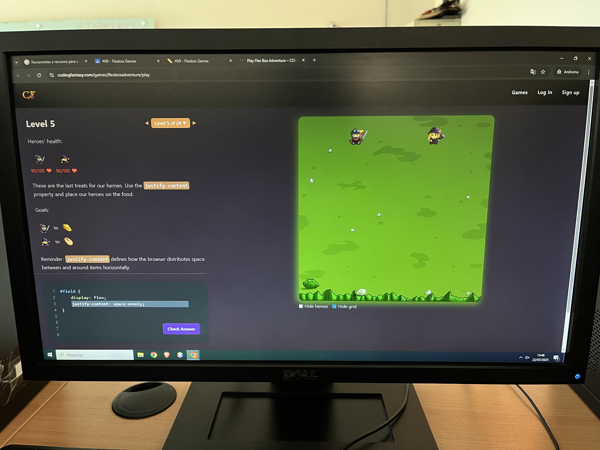
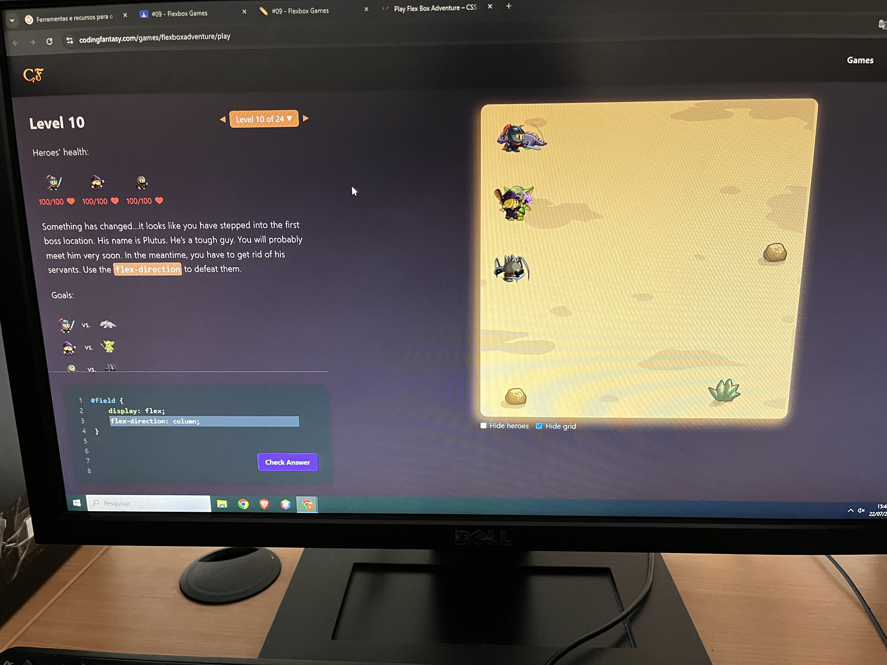
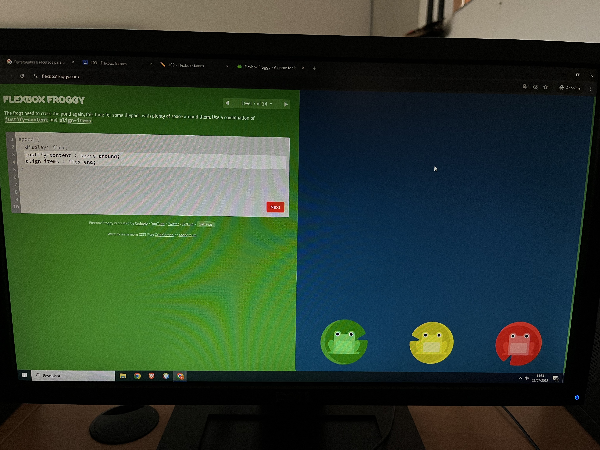
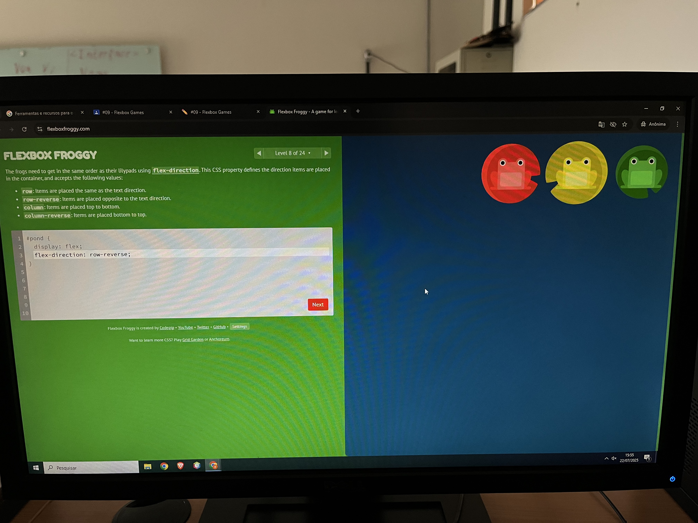
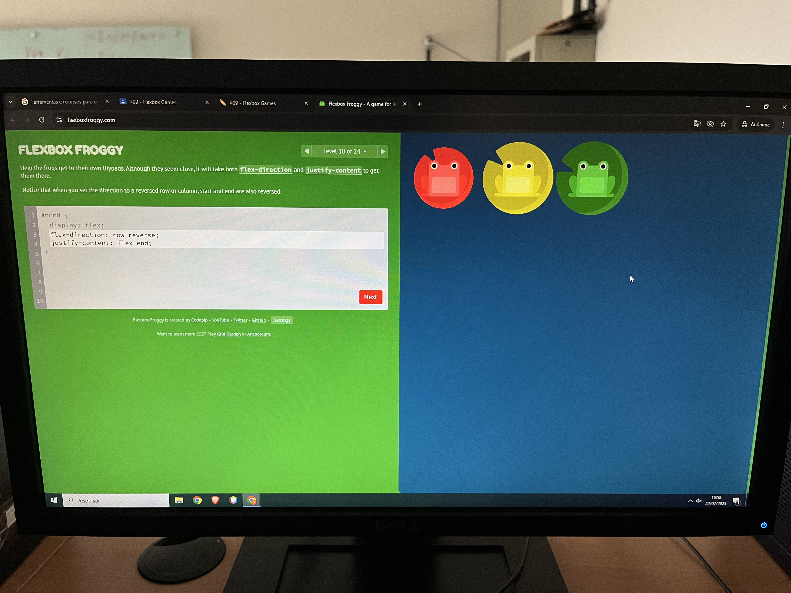

Maria Clara Verissimo Ferreira Araujo
Escolhi porque achei legal e bonito, no meu gosto.
Tive mais dificuldade pois não sabia a função do valor "space-evenly".

Tive dificuldade pois exigia preencher duas propriedades.
Tive mais dificuldade pois não lembrava do valor "column"
Escolhi porque achei colorido.
Tive mais dificuldade pois exigia preencher duas propriedades.
Tive mais dificuldade pois não lembrava do valor "row-reverse"
Tive dificuldade pois demorei para perceber que as cores estavam ao contrario
Na construção da tela de login do site CAJUI utilizando Flexbox na primeira linha na qual se encontraram duas imagens sera utilizado o "display: flex;" que transforma em um elemento flexivel e o "Justify-content:center" para alinhar horizontalmente no centro e as duas outras linhas na qual tem a necessidade de usar o Flexbox são as com o espaço para preencher se quer continuar conectado e para acessar e a linha para alterar ou recuperar a senha, usando novamente o "display:flex;" e o "Justify-content: space-between;" para definir o espaço entre os blocos.